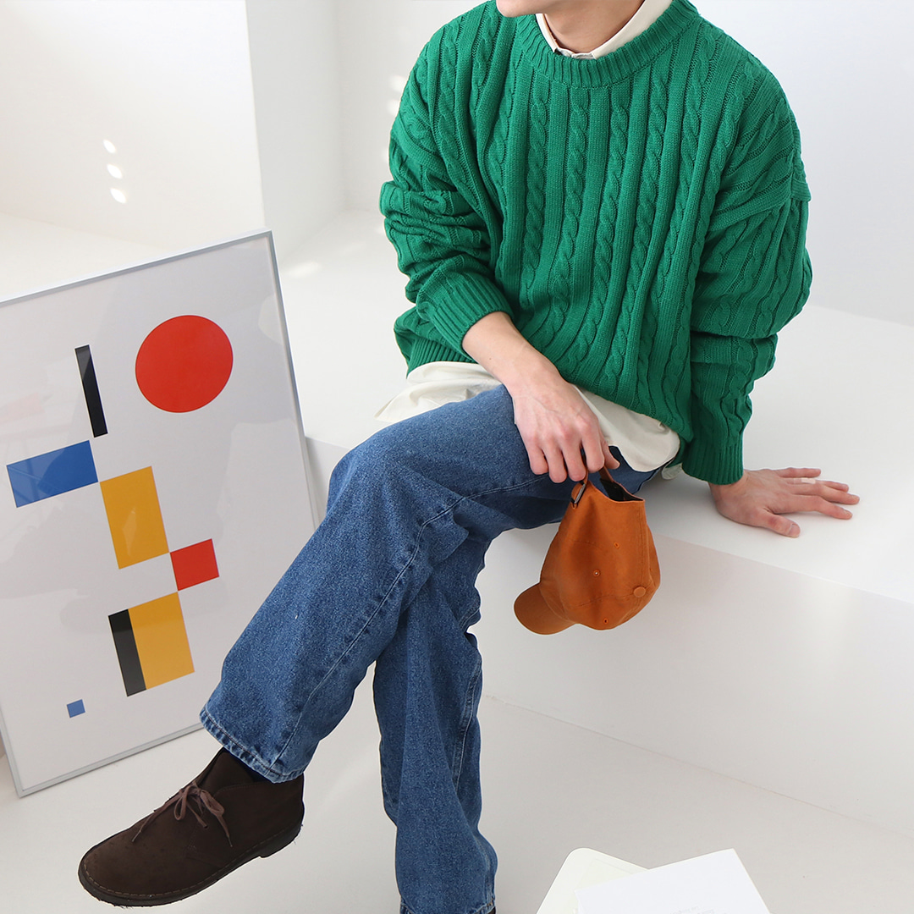

{% if user.is_authenticated %}

{{user}}
{% else %} 로그인을 하세요 {% endif %}
내가 쓴 글 보기{{post_count}}개
내가 쓴 댓글 보기{{comment_count}}개
{% else %} 로그인을 하세요 {% endif %}
모든 게시글 모아보기
{%for post in post_list%}
{{post.category}} | {{post.title}} | 댓글 수 구현 전 |
{{post.create_date}} | {{post.total_likes}}
{%endfor%}